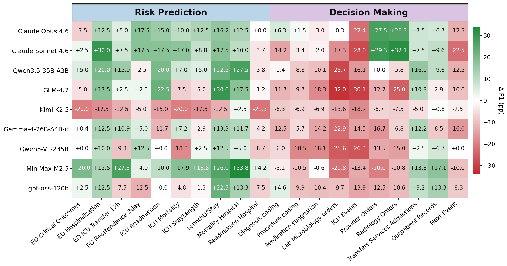
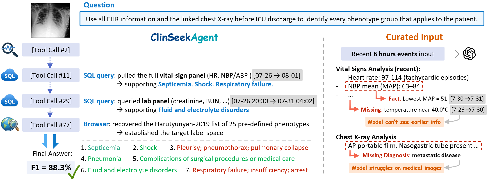
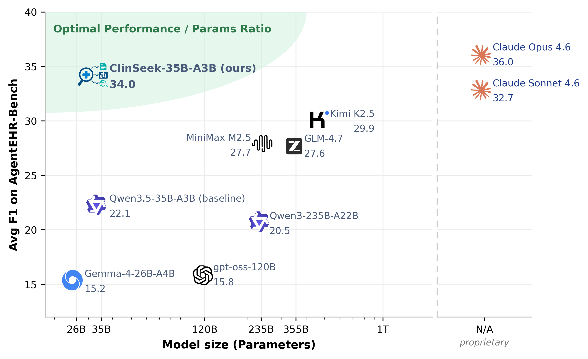
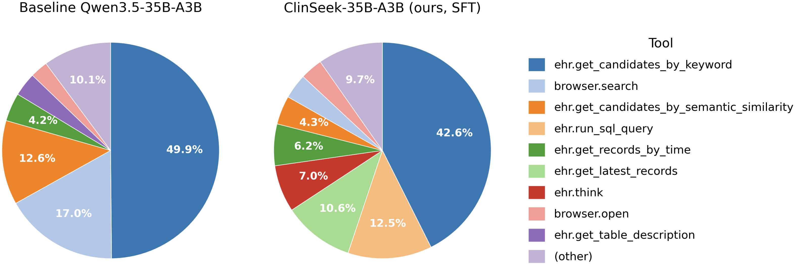

Automating Multimodal Evidence Seeking
for Agentic Clinical Reasoning
Patient evidence, found — not given. Real clinical workflows require an agent to actively seek evidence across raw EHRs, medical imaging, and external knowledge — not just reason over a pre-selected context.
Juncheng Wu*, Letian Zhang*, Yuhan Wang*, Haoqin Tu, Hardy Chen, Zijun Wang, Cihang Xie, Yuyin Zhou
UC Santa Cruz · *equal technical contribution · Corresp. jwu418@ucsc.edu
LLM-based clinical agents have largely been evaluated on pre-curated patient context — a setting that hides what is arguably the hardest part of clinical reasoning: deciding where to look, what to retrieve, and how to integrate evidence across modalities. We introduce ClinSeekAgent, an automated agentic framework for dynamic multimodal evidence seeking in clinical decision support, and ship it with three concrete artifacts:
On ClinSeek-Bench, ClinSeekAgent lifts Claude Opus 4.6 multimodal F1 from 47.5 → 62.6 (+15.1), improves 5/6 evaluated multimodal agents overall, and improves 7/9 agents on text-only risk prediction. The student inherits not just answers but tool-use behaviour: post-SFT, ehr.run_sql_query usage jumps from 2.0% → 12.5%.
What changes once the agent has to find its own evidence.
When the agentic model has tools, it finds signals the benchmark's hand-picked context missed. Claude Opus 4.6: +15.1 F1 on multimodal, +3.2 on text-only overall. MiniMax M2.5: +4.2. Risk prediction improves for 7 / 9 evaluated agents.
The gains concentrate in agents that already plan and use tools well — Opus 4.6 and Sonnet 4.6 improve on both text and multimodal; several smaller OSS agents (Kimi K2.5, GLM-4.7) regress when handed the raw tool space. The pipeline works through the agent's own skill rather than as a substitute for it — which raises the natural question: can we transfer that skill into a smaller open model?
We collect ClinSeekAgent trajectories from a strong teacher (Opus 4.6) and SFT them into Qwen3.5-35B-A3B. The resulting ClinSeek-35B-A3B reaches 34.0 avg F1 on AgentEHR-Bench — +11.9 over its base, ahead of Kimi K2.5 (29.9), MiniMax M2.5 (27.7), GLM-4.7 (27.6), and at 94.4% of its teacher.
Each ClinSeekAgent run is an open-ended trajectory τ = (x, (a₁,o₁), …, (a_K,o_K), ŷ): a patient-level task, alternating tool actions and observations, terminating with a final answer. The agent decides ordering, depth, and termination; we do not prescribe a retrieval procedure. EHR queries are restricted to records strictly before the prediction-time cutoff, so the agent never peeks at the future.
Three complementary evidence sources, one OpenAI-tool-call interface:
Schema inspection, temporal record retrieval, free-form SQL, candidate-term grounding (BioLORD semantic search over reference vocabularies), and a finish action. The MCP server enforces the prediction-time cutoff per patient.
search · open · find. Backed by either a local browser or the Serper API. Used for clinical definitions, drug references, and benchmark-specific taxonomies (e.g. the 25-phenotype Harutyunyan 2019 labels).
DICOM preprocessing, CXR classification (TorchXRayVision), report generation, phrase grounding and anatomical segmentation (MAIRA-2), plus an image visualiser. Provides structured findings beyond the agent's native vision.
Same task definition, same labels — only the evidence access pattern changes. We evaluate twelve agents on ClinSeek-Bench.
The source benchmark's hand-selected EHR context (up to 100 events from the last 24 h) is rendered into the prompt; the model answers directly with no tools.
The curated context is stripped. The model receives only the patient ID, prediction-time cutoff, and access to the 20-tool space, and must retrieve evidence over multiple turns.
Click a tab to switch the result table.



The inference-time results above lean on strong agentic capability in the model. To transfer that capability into an open student, we run Claude Opus 4.6 through ClinSeekAgent on the text-based training split, collect the resulting trajectories in their native tool-call format, and SFT Qwen3.5-35B-A3B on them (8× H200, TP=2 / EP=8, 52k sequence length, cosine 2e-5).


Everything needed to reproduce the paper, plus the artifacts we release.
@article{clinseekagent2026,
title = {ClinSeekAgent: Automating Multimodal Evidence Seeking for Agentic Clinical Reasoning},
author = {Wu, Juncheng and Zhang, Letian and Wang, Yuhan and Tu, Haoqin and
Chen, Hardy and Wang, Zijun and Xie, Cihang and Zhou, Yuyin},
year = {2026},
}arXiv link will appear here once the preprint is posted.